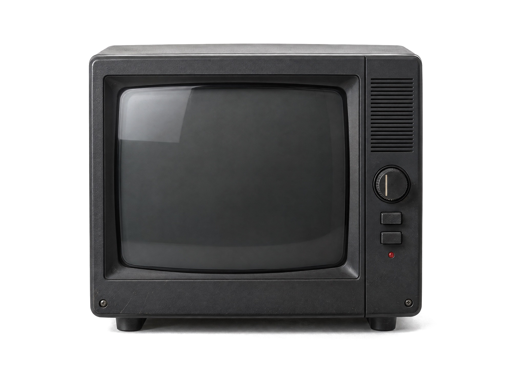
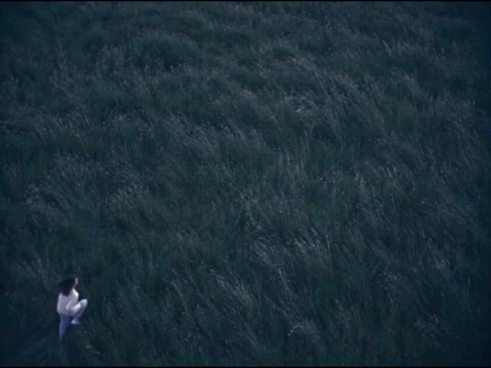
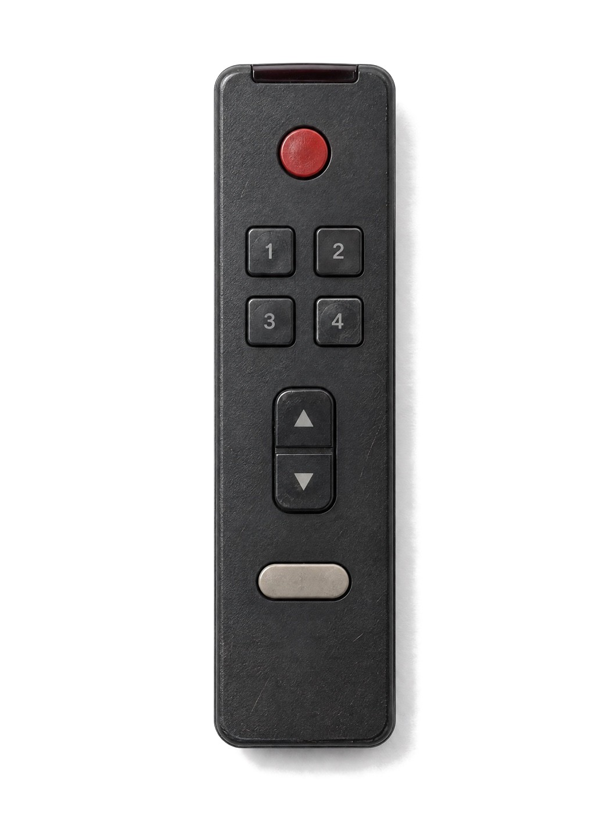

HARRY WU
WORK
FILM
EXPERIMENTS
Channel
01 / 04
Title
Specimen
Year
2026
Runtime
00:25 · AI film


CH 01
SPECIMEN · 2026

POWER
01
SPECIMEN 02 FITCHECK 03 — 04 —
TUNE
WATCH
FULL FILM
Use the remote, or the ← → keys
Instagram ↗
TikTok ↗
Vimeo ↗
← Back to the set
CH 01
Specimen
Sound on
Specimen
2026
AI film · 00:25
Next: CH 02 →